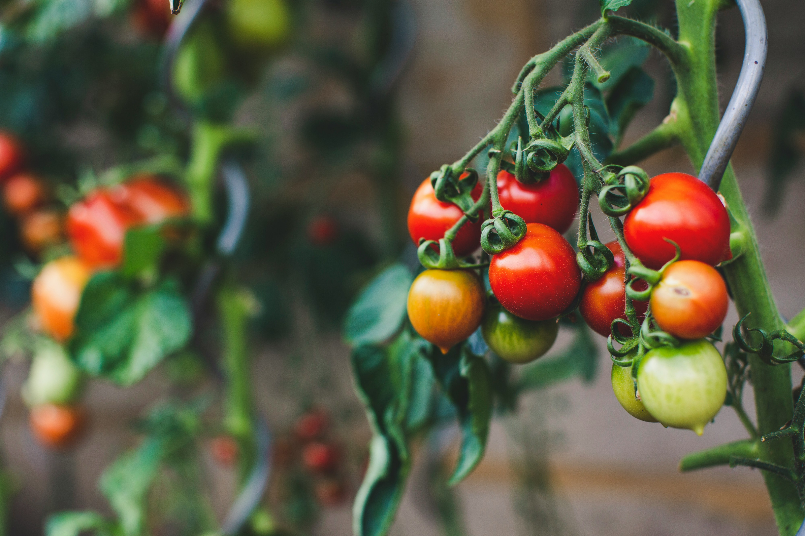

Quem é melhor: vegetais ou legumes
postado 20 março 2022
vegetais e legumes são das familia, não são diferentes.Essa pergunta foi muito falada na competição de Fruta, quando dois concorrente disseram que legumes são melhores que frutas, só que um deles disse vegetal, e então causo uma briga que...
Leia maisEstão vendendo bolo de tomate
postado 10 março 2022 A receita iniciou incrivelmente na italia, quando uma senhora confundio os tomates com maçã, junto com mais tempeiros confundidos.A senhora vendia seus bolos, quando frequesia degustou bolo, pediram e aí começou a surgir esse receita. Os ingredientes são...
Leia mais
Todos os direitos reservados